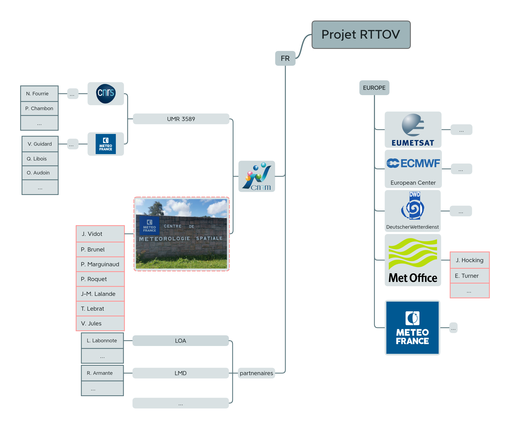
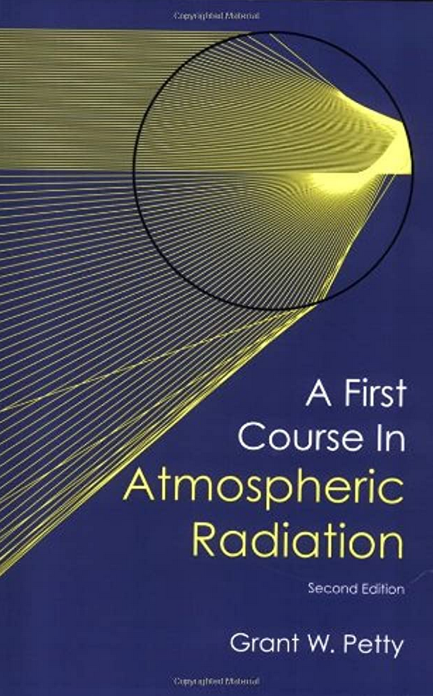
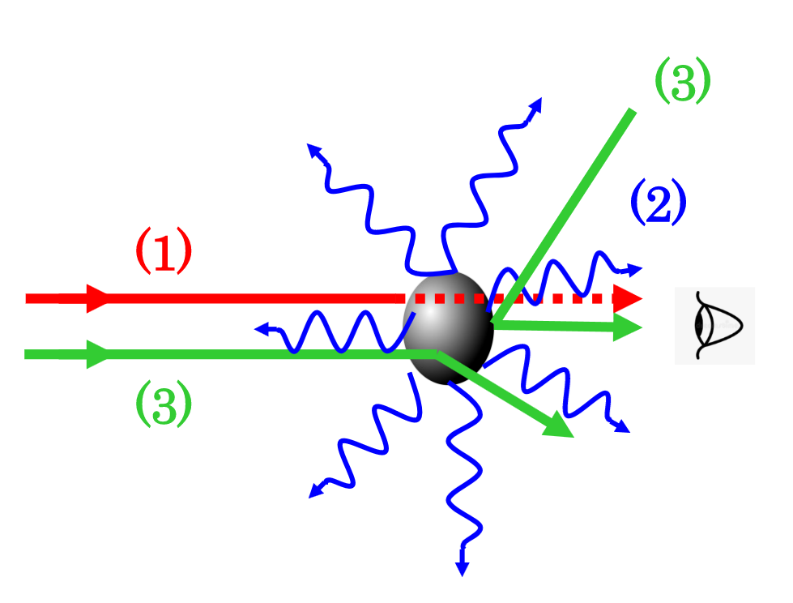
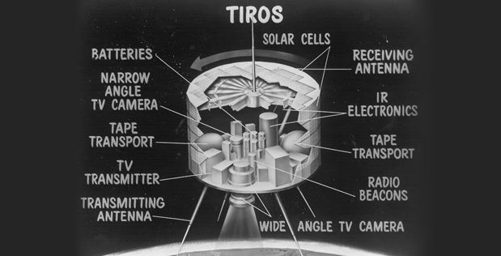
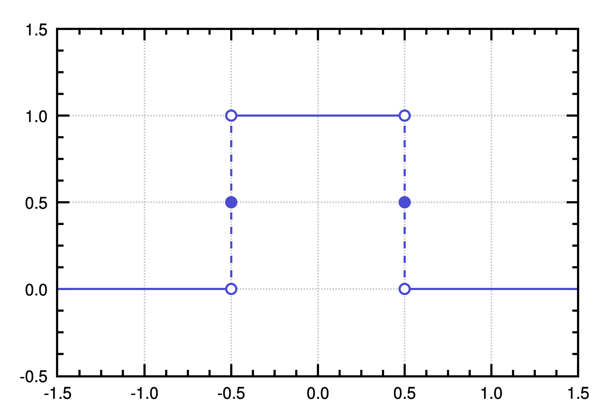
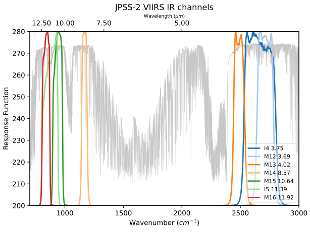
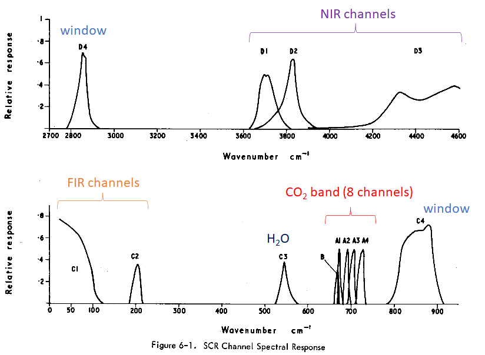
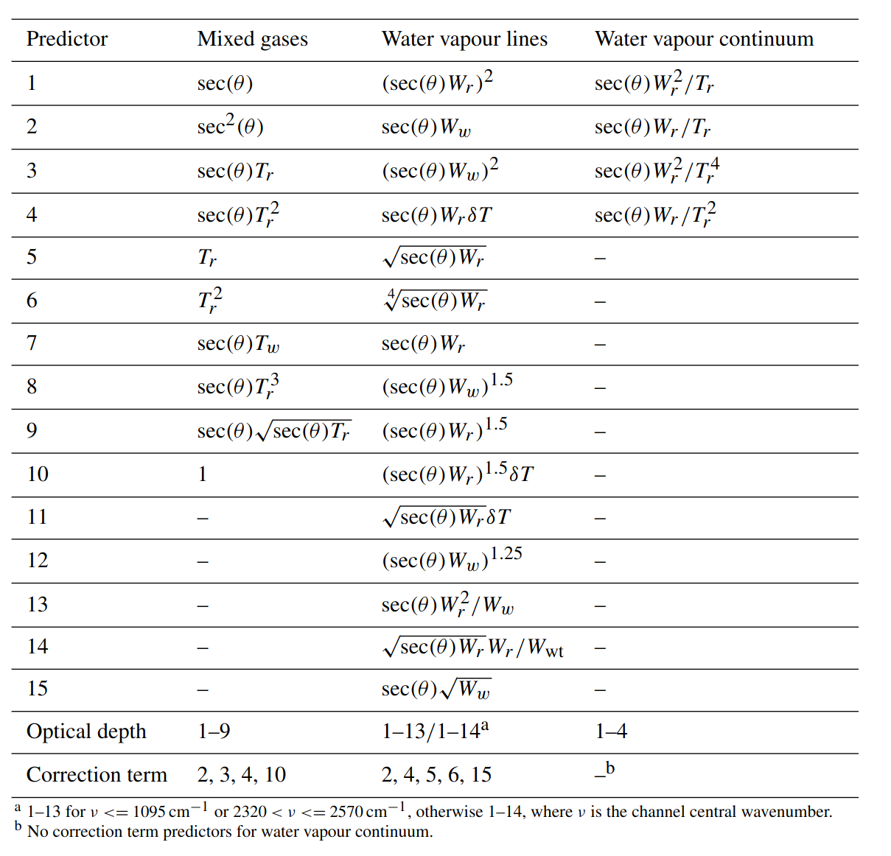
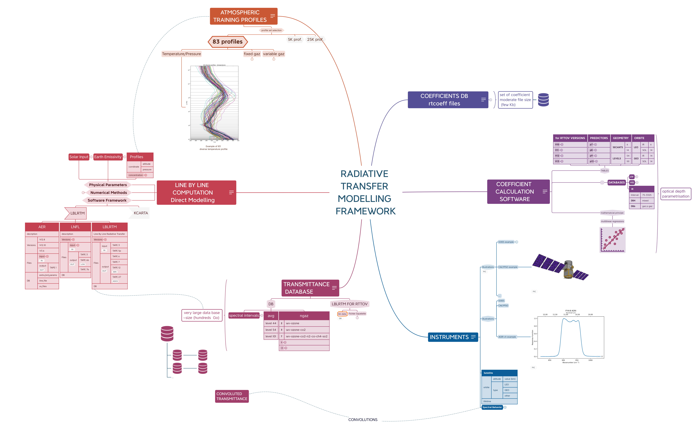

Les coefficients RTTOV
vers une refonte de la chaîne de génération
Thomas LEBRAT
Who is contributing ?
Research Engineer [SAFNWP]
RTTOV
- Coefficient Generation for Instruments
- Rationalization of the Processing Chain
- improve efficiency
- increase versatility
- Tool Development : v12 \(\rightarrow\) v13 \(\rightarrow\) v14
- Documentation
RTTOV v14
Upcoming deadlines [code freeze, 05/2023]
- Implementing new vertical scheme
- Computing the new Transmittance DB
It's a team effort !

long term collaboration : ~ 30 years
What is RTTOV ?
R.T.T.O.V ?
Let's first try to guess the acronym !
RT TOV
- Radiative Transfer
- for TOVS
Radiative Transfer
Electromagnetic radiation interacts in various ways with the atmosphere \(\rightarrow\) need for a physical model
- (1) absorption
- (2) emission
- (3) diffusion


TOVS
- TIROS
- Operational Vertical Sounder
TIROS
- Television
- IR
- Observational Satellite

LEO then GEO

Generated coefficients
rt_coefficients
- coeff : they allow accurate + efficient computations
- 1 instrument \(\rightarrow\) a unique set of coefficients
- Our main duty is to provide well validated sets
- It requires some efforts to guarantee this !
[ with the help of P.Roquet]
| Satellite | Instrument | Type | Origine |
|---|---|---|---|
| NOAA-21 | VIIRS | Multispectral/LEO | SAFNWP |
| LandSat-7 | ETM | Multispectral/LEO | SAFNWP |
| FY4-B | AGRI | Multispectral/GEO | SAFNWP |
| GIIRS | Hyperspectral/GEO | SAFNWP | |
| Oceansat | SSTM | Multispectral | SAFNWP |
| FY3E | HIRAS 2 | SAFNWP | |
| CO2M | CLIM | SAFNWP |
[ J.Vidot ]
| Satellite | Instrument | Type | Origine |
|---|---|---|---|
| Dummyhi | None Disclosure Agreement | JMA | |
| MTG | FCI | Multispectral/GEO | |
| Forum | Hyperspectral-Far IR | TOSCA | |
| Dummyhi | Dummy10 | Hyperspectral-Box-car | |
| Dummyhi | Dummy11 | Hyperspectral/ | Scalian |
[ with V.Jules, JV and JML ]
| Satellite | Instrument | Type | Origine |
|---|---|---|---|
| Meteor | SI | Hyperspectral/LEO | C3S2 |
| Nimbus-4 | PMR | Gas Pressure Modulation | C3S2 |
| IRIS | Hyperspectral-Far IR | C3S2 | |
| DMSP 1-4 | SSH | C3S2 | |
| Nimbus-4 & 5 | SCR | Multispectral | C3S2 |
Radiometers
Nobody's Perfect

WISE ( Wide-field Infrared Survey Explorer )
VIIRS (Visible Infrared Imaging Radiometer Suite)

Selected Chopper Radiometer (Nimbus)

Visu SCR
A very fast RT model, how ?
Gaining speed ?
Here are the Key Ideas
convolution
demo convolution

parametrization
In principle, as simple as \(y = a x\) !
As we have multiple parameters, it is just multi-linear :-)
- the principle is simple
- the implementation is rather complex
Parametrized Transmittance
- from : Hocking et al, 2023
- original idea : McMillin, L. M. and Fleming, H. E., 1976
- Subject of a possible Journal Club ?
The aim of the parameterisation is to obtain layer optical depths for a given satellite sensor channel for specific gases. The individual gas layer optical depths are summed to give the total channel layer optical depth due to gas absorption, which is subsequently used in solving the radiative transfer equation to obtain top-of-atmosphere radiances.
The gas layer optical depths are related to atmospheric predictors via a linear regression. The predictors are quantities derived from the input atmospheric profile variables: pressure, temperature, gas concentrations, and local zenith angle of the radiation path.
Associer l'épaisseur optique à un jeu de predicteurs X(P,T,c, θ)
The regression coefficients are obtained using layer optical depths obtained from channel integrated transmittance profiles for a diverse set of training profiles using an accurate line-by-line (LBL) radiative transfer model. The training profiles are interpolated onto a fixed set of pressure levels giving a pre-defined set of layers for the optical depth regression.
*
Fiter l'épaisseur optique (du modèle de régression RTTOV) contre celle obtenue via une BD réaliste (jeu de profils représentatif).
Mixed gas and water vapour predictors

resumé
- Associer l'épaisseur optique à un jeu de predicteurs X(P,T,c, θ)
- Fiter l'épaisseur optique (du modèle de régression RTTOV) contre celle obtenue via une BD réaliste (jeu de profils représentatif).
Terra incognita
Cartographie

Generating the Transmittance DB
Databases : Volume Estimation
DB4 de lbl-rttov
| 129G | wv-ozone-co2-n2o-co-ch4-so2/l101 |
| 67G | wv-ozone-co2-n2o-co-ch4-so2/l54 |
| 1.1T | wv-ozone-co2-n2o-co-ch4-so2/lbl |
| 114G | wv-ozone-co2-n2o-co-ch4/l101 |
| 59G | wv-ozone-co2-n2o-co-ch4/l54 |
| 941G | wv-ozone-co2-n2o-co-ch4/lbl |
| 78G | wv-ozone-co2/l101 |
| 40G | wv-ozone-co2/l54 |
| 629G | wv-ozone-co2/lbl |
| 146G | wv-ozone/l101 |
| 76G | wv-ozone/l54 |
| 629G | wv-ozone/lbl |
DB5 de lbl-rttov
| 446G | wv-ozone-NR/lbl |
| 452G | wv-ozone-co2-NR/lbl |
| 675G | wv-ozone-co2-n2o-co-ch4-NR/lbl |
| 749G | wv-ozone-co2-n2o-co-ch4-so2-NR/lbl |
| 59G | wv-ozone-co2-n2o-co-ch4-so2/l101 |
| 31G | wv-ozone-co2-n2o-co-ch4-so2/l54 |
| 749G | wv-ozone-co2-n2o-co-ch4-so2/lbl |
| 53G | wv-ozone-co2-n2o-co-ch4/l101 |
| 27G | wv-ozone-co2-n2o-co-ch4/l54 |
| 675G | wv-ozone-co2-n2o-co-ch4/lbl |
| 35G | wv-ozone-co2/l101 |
| 18G | wv-ozone-co2/l54 |
| 452G | wv-ozone-co2/lbl |
| 36G | wv-ozone/l101 |
| 19G | wv-ozone/l54 |
| 452G | wv-ozone/lbl |